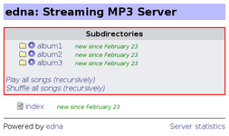
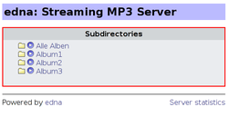
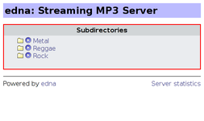

edna
Dieser Artikel wurde für die folgenden Ubuntu-Versionen getestet:
Ubuntu 14.04 Trusty Tahr
Zum Verständnis dieses Artikels sind folgende Seiten hilfreich:
Edna  ist ein simpler Audio-Streamingserver. So gering der Funktionsumfang auch sein mag, die Bedienung und Einrichtung ist sehr einfach und das macht das Programm interessant für Heimnetzwerke, in denen Clients einfach nur die Bestandteile einer Musiksammlung abspielen sollen.
ist ein simpler Audio-Streamingserver. So gering der Funktionsumfang auch sein mag, die Bedienung und Einrichtung ist sehr einfach und das macht das Programm interessant für Heimnetzwerke, in denen Clients einfach nur die Bestandteile einer Musiksammlung abspielen sollen.
Die Webanwendung kann nur indirekt durch einen Client dirigiert werden. Das Programm liest beim Start alle in der Konfiguration angegebenen Verzeichnisse ein und erstellt daraus Playlisten, die ein integrierter Webserver zur Verfügung stellt. Jedes Verzeichnis bekommt seine eigene Playlist. Werden zwischendurch neue Dateien hinzugefügt werden, muss einfach nur die Webseite aktualisiert werden. Dadurch werden automatisch auch die Playlisten aktualisiert.
Edna ist nicht die einzige Möglichkeit, einen Audio-Streamingserver aufzusetzen. Eine Programmübersicht liefert der Artikel Musik verwalten.
Installation¶
 Die Anwendung ist nicht in den offiziellen Paketquellen enthalten.
Die Anwendung ist nicht in den offiziellen Paketquellen enthalten.
Manuell¶
Wie bei in Python geschriebenen Programmen üblich, kann edna direkt von der Entwicklerseite heruntergeladen  , entpackt [1] und dann direkt über ein Terminalfenster [2] (siehe Nutzung) ausgeführt werden. Möchte man edna als Dienst im Hintergrund laufen lassen, empfiehlt es sich, die Dateien mit Root-Rechten [3] z.B. nach /usr/local/lib/edna/ zu kopieren.
, entpackt [1] und dann direkt über ein Terminalfenster [2] (siehe Nutzung) ausgeführt werden. Möchte man edna als Dienst im Hintergrund laufen lassen, empfiehlt es sich, die Dateien mit Root-Rechten [3] z.B. nach /usr/local/lib/edna/ zu kopieren.
OGG-Vorbis¶
Möchte man nicht nur MP3-, sondern auch OGG-Dateien streamen können, muss noch folgendes Paket installiert [4] werden:
python-pyvorbis (ab Ubuntu 16.04 in universe)
 mit apturl
mit apturl
Paketliste zum Kopieren:
sudo apt-get install python-pyvorbis
sudo aptitude install python-pyvorbis
Konfiguration¶
 Die Konfiguration von edna erfolgt vollständig über eine Datei mit dem Namen edna.conf [5]. Folgende Optionen können geändert werden (nur die Angabe des Musik-Ordners ist eine Pflichtangabe):
Die Konfiguration von edna erfolgt vollständig über eine Datei mit dem Namen edna.conf [5]. Folgende Optionen können geändert werden (nur die Angabe des Musik-Ordners ist eine Pflichtangabe):
| Optionen | |
| Parameter | Zweck |
dir1 = PFAD = NAME | Hier werden die Verzeichnisse, welche abgespielt werden sollen, angegeben. Diese werden einfach durchnummeriert. Begonnen wird mit dir1. Jedes hier aufgeführte Verzeichnis wird später als eigene Playlist zur Verfügung gestellt. |
port = | Portnummer, auf der gesendet werden soll. Standard ist 8080 |
zip = | Sollen Lieder als ZIP-Datei heruntergeladen werden? Standard ist 0 (false), da sehr speicherintensiv. |
robots = | Suchmaschinen den Zugriff über eine robots.txt verwehren. Standard ist 1 (true) |
template-dir = | Vorlagen-Ordner. Standard ist EDNA-ORDNER/templates/ |
resource-dir = | Symbolordner. Standard ist EDNA-ORDNER/resources/ |
template = | Standard-Vorlage, ohne weitere Angaben EDNA-ORDNER/templates/default.ezt |
fileinfo = | ?. Standard ist 0 (false). |
encoding = | Verwendete Zeichensätze. Standard ist UTF-8,iso8859-1. |
binding-hostname = | IP-Adresse oder Hostname des Servers |
log = | Protokolldatei. Standard ist - (kein Protokoll) |
allow = | Hostname, IP-Adresse oder -bereich, von der ein Zugriff gestattet ist. |
auth = BENUTZER:KENNWORT | Zugriffsschutz setzen |
auth_level = x | 0 = Only check '/', 1 = Check for all directory indexes (default), 2 = Check for all requests |
password_hash = | (veraltete) Methoden zum "Salzen" des Kennworts: md5 oder sha |
debug_level = | Standard ist 0 (false), für mehr Informationen auf 1 setzen |
days_new = | Alter der neuer Dateien in Tagen. Standard ist 30. |
hide_names = | Ordner- oder Titelnamen, die nicht aufgelistet werden sollen |
hide_matching = | Regeln, wann bestimmte Ordner oder Titel nicht angezeigt werden |
Musik-Ordner¶
Edna arbeitet rekursiv, d.h. dass alle Musikdateien unterhalb der in dir1, dir2... angegebenen Dateien inkl. aller Unterverzeichnisse indiziert werden. Die einfachste Variante lautet daher:
dir1 = MUSIK-ORDNER/ = BEZEICHNUNG
Eine andere Variante ist, jedes Album einzeln verfügbar machen. Beispiel:
dir1 = MUSIK-ORDNER/album1 = Album1 dir2 = MUSIK-ORDNER/album2 = Album2 dir3 = MUSIK-ORDNER/album3 = Album3
Möchte man zusätzlich alle Alben in einer Playlist zur Verfügung stehen, kombiniert man beide Varianten:
dir1 = MUSIK-ORDNER/ = Alle Alben dir2 = MUSIK-ORDNER/album1 = Album1 dir3 = MUSIK-ORDNER/album2 = Album2 dir4 = MUSIK-ORDNER/album3 = Album3
Letztlich hängt es vom eigenen Geschmack ab, wie man die Daten im Musik-Ordner ablegt. Es kann beispielsweise sinnvoll sein, Alben vorab nach Musikrichtung zu gruppieren.
|  |
| Übersichtseite |
|  |
| Übersichtseite und separate Alben |
|  |
| Gruppierung nach Genre |
Nutzung¶
Programmstart¶
Edna wird durch einen einfachen Aufruf in einem Terminal ausgeführt. Optional kann angegeben werden, ob das Programm im Hintergrund laufen soll (--daemon) und wo die zentrale Konfiguration gespeichert ist:
/PFAD/ZU/edna.py /PFAD/ZU/edna.conf
Je nach den lokalen Gegebenheiten muss der Pfad entsprechend angepasst werden. Nun ruft man in einem Webbrowser die Adresse http://SERVER-IP_ODER_NAME:PORT oder (zum Testen auf dem eigenen Rechner) http://localhost:8080 auf. Beendet wird das Programm bei dieser Nutzungsart via
Strg +
C .
Kommentare¶
Vorhandene Textdateien (.txt) werden automatisch mit aufgelistet und können z.B. verwendet werden, um weitere Informationen zum Ordnerinhalt bereitzustellen.
Bilder¶
Das Gleiche wie für Textdateien gilt auch für Bilder. Enthält ein Ordner Bilder in den Formaten GIF, JPG, JPEG oder PNG, werden diese automatisch angezeigt. Damit lassen sich auf einfache Art und Weise Cover einbinden. Mit in Musikdateien eingebetteten Bildern kann edna historisch bedingt nicht umgehen.
Dateien herunterladen¶
Neben dem Streaming der Titel bietet edna an, einzelne Dateien unkomprimiert oder den gesamten Ordner komprimiert als .zip-Datei herunterzuladen. Gerade letztere Funktion benötigt aber viel RAM, da das ZIP-Archiv komplett im Arbeitsspeicher erstellt wird.
Server Statistics¶
Edna bietet rechts unten einen Link "Server Statistics" an, über den man sich eine Liste der zuletzt gespielten Dateien und die IP-Adresse(n) des/r Nutzer(s) anzeigen lassen kann. Diese Angaben gehen allerdings bei jedem Neustart von edna verloren.
Themen¶
Das Aussehen der Webseiten von von edna kann auf Wunsch verändert werden. Das Programm verwendet Themendateien mit der Endung .ezt, die reines HTML enthalten und mit entsprechenden Kenntnissen angepasst werden können.
Starten als Hintergrundprogramm¶
Um edna automatisch beim Rechnerstart via Upstart auszuführen, erstellt man die Datei /etc/init/edna.conf mit Root-Rechten (bitte nicht mit der oben genannten Konfigurationsdatei verwechseln!). Der Inhalt (Pfad bitte anpassen):
# edna - music server # description "Start edna music server" start on runlevel [2345] stop on runlevel [016] task export PYTHONPATH=/usr/local/lib/edna exec python /PFAD/ZUR/edna.py --daemon /PFAD/ZUR/edna.conf
Nun muss die Upstart-Konfiguration aktualisiert werden:
sudo initctl reload-configuration
Die spätere Steuerung erfolgt (falls erforderlich) mit den Befehlen:
Edna starten:
sudo initctl start edna
Edna stoppen:
sudo initctl stop edna
 Programmübersicht
Programmübersicht- Erstellt mit Inyoka
-
 2004 – 2017 ubuntuusers.de • Einige Rechte vorbehalten
2004 – 2017 ubuntuusers.de • Einige Rechte vorbehalten
Lizenz • Kontakt • Datenschutz • Impressum • Serverstatus -
Serverhousing gespendet von